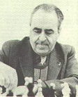

GAMBITS BY ESTRIN

pgn-file 12 gambit games by Estrin
Yakov Borisovich Estrin (21 iv 1923 - 2 ii 1987) studied law in Moscow. He became best known as a correspondence chess player. His great strength was wonderfully shown in gambit games. I have analysed twelve examples for the pgn-file.
Soviet correspondence championships:
Number five (1960-63) place 1/2
Number six (1963-64) place 9/10
Number ten (1971-72) place 10
World correspondence championships:
Semi-final group C number four (1958-61) place 7
Semi-final group K number five (1962-65) place 1
Final number five (1965-68) number 13
Final number six (1968-74) number 3
Final number seven (1972-76) number 1: World champion!
Final number eight (1975-80) place 7/10
Final number ten (1978-84) place 12
He played for 27 years in semifinals and finals of the world championships. That was most of his adult life!
His opening books were published in the Soviet Union, Germany, England, the USA and other countries.
 |
Go to home page |